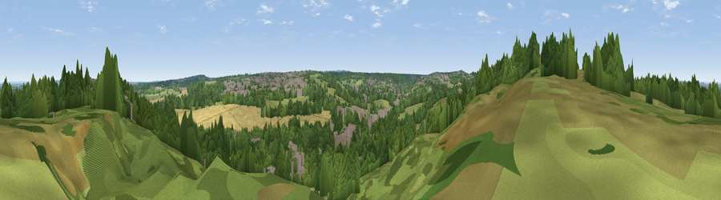

Viewpoint near Addington
#42363 in England · top 60% of its area beats it · near Addington · path 165 mWhere it is
The exact computed spot (TQ 37075 64325). Click the marker for map links.
Public access: the nearest public right of way is about 165 m away — the final stretch may cross private land. Computed from Natural England's CRoW access layer and OpenStreetMap rights of way — not the legal definitive map. Always verify locally.
The view, rendered

A 360° render of this exact spot computed from the terrain model, tree cover and land cover — summer colours, afternoon light, calibrated against photographs of famous viewpoints. Real trees, hedges and buildings will differ in detail.
The panorama
Grey silhouette: terrain skyline in each direction (720 bearings, Earth curvature and refraction included). Dashed green: skyline with trees (+15 m) and buildings (+8 m) as obstacles. Blue strip: how far the ground is visible on each bearing.
Where the view opens
Wedge length = distance to the farthest visible ground on that bearing (vegetation-aware). Rings at 10, 25 and 50 km.
What fills the view
52% woodland · 23% grassland · 14% built-up · 10% cropland
Angular shares of the visible panorama (visual magnitude), not map area. Landscape diversity 0.52 (0–1 Shannon).
Key numbers
More beautiful places nearby
The staircase of upgrades: each row has a higher view potential than everything closer. Driving times are estimates from straight-line distance, calibrated against real road routing — check an actual route before setting out.
| Place | Direction | Drive | Score |
|---|---|---|---|
| Viewpoint near Addington | W · 0 km | ~1 min | 32.7 |
| Viewpoint near Croydon | W · 3 km | ~7 min | 34.6 |
| Viewpoint near Woldingham | S · 7 km | ~15 min | 40.1 |
| Viewpoint near Tatsfield | SSE · 9 km | ~18 min | 53.1 |
| Viewpoint near Limpsfield | SSE · 10 km | ~19 min | 55.9 |
| Viewpoint near Limpsfield | S · 10 km | ~19 min | 64.0 |
| Viewpoint near French Street | SE · 16 km | ~29 min | 64.5 |
| Viewpoint near Lower Kingswood | SW · 18 km | ~31 min | 67.7 |
51.36146, -0.03254 · source: screening · position refined by local search. Computed location — check access rights before visiting.